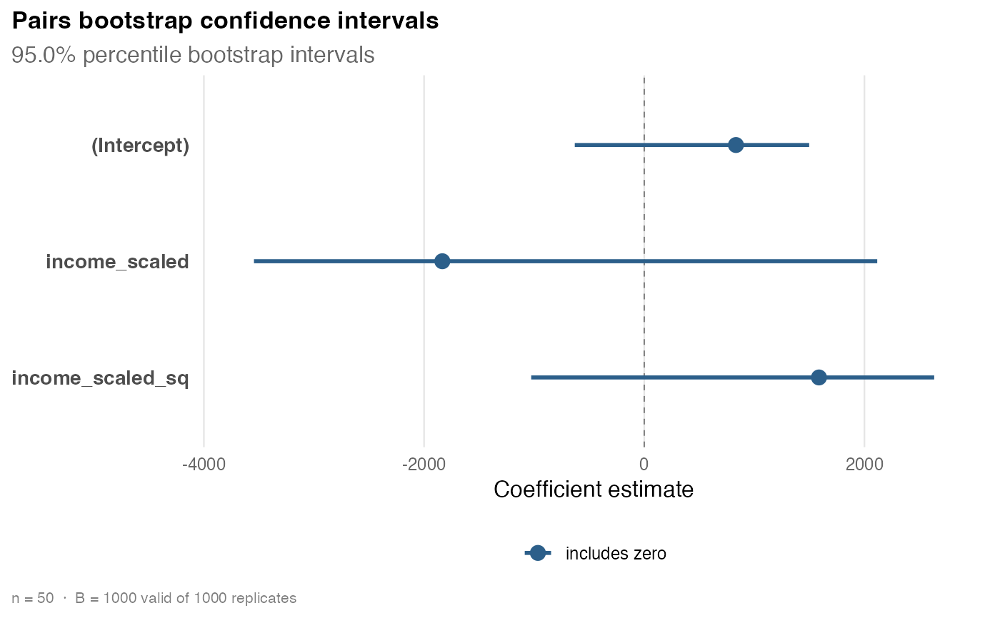

Computes pairs (case) bootstrap standard errors and confidence intervals for
the coefficients of an ordinary least squares model fitted with
stats::lm(). The pairs bootstrap resamples the observations
\((y_t, x_t)\) with replacement, refits OLS on each resample, and
summarizes the resulting sampling distribution of \(\hat\beta\). It makes no
assumption about the form of the error variance, so it is a useful empirical
reference for the analytic heteroskedasticity-consistent standard errors
produced by hcinfer() and vcov_hc().
Arguments
- object
An ordinary least squares model fitted by
stats::lm(). Weighted fits are not supported.- B
Number of bootstrap replicates. A positive integer; defaults to
1000.- level
Confidence level for the intervals, strictly between 0 and 1. Defaults to
0.95.- ci_type
Interval type:
"percentile"(default),"basic", or"normal". See Details.- cores
Number of worker processes. A single number greater than or equal to 1; non-integer values are rounded to the nearest integer. The default
1runs the replicate fits sequentially. Any value that rounds to2or more runs them in parallel withpurrr::in_parallel()and the mirai backend, which requires the mirai and carrier packages. Parallelism only speeds up the computation and never changes the numeric result.- seed
Optional single number used to seed the resampling for reproducibility. When supplied, the result is deterministic and independent of the number of
cores. Defaults toNULL.- x
An object returned by
boot_pairs().- ...
Unused.
Value
An object of class hcinfer_boot: a list with the original OLS
coefficients, bootstrap std_error, bias, interval endpoints conf_low
and conf_high, the settings (level, ci_type, B, B_effective,
n_failed, cores, seed), the full replicates matrix
(B rows by p columns), and a tidy table tibble with columns term,
estimate, bias, std_error, conf_low, and conf_high. Use
coef(), vcov(), and confint() to extract components.
Details
For each of B bootstrap replicates, a sample of n row indices is drawn
with replacement from 1, ..., n, and OLS is refitted on the resampled rows
\((y_{i}, x_{i})\). Writing \(\hat\beta^{*}_{(r)}\) for the estimate on
replicate r, the bootstrap standard error of coefficient j is the sample
standard deviation of \(\hat\beta^{*}_{1,j}, \ldots, \hat\beta^{*}_{B,j}\).
Three interval types are available through ci_type. Let
\(q_\alpha\) denote the empirical \(\alpha\) quantile of the bootstrap
replicates for a coefficient, \(\hat\beta_j\) the original estimate,
\(s^{*}_j\) the bootstrap standard error, and
\(\alpha = 1 - \texttt{level}\).
The "percentile" interval is
\([q_{\alpha/2}, q_{1-\alpha/2}]\). The "basic" (reverse percentile)
interval is
\([2\hat\beta_j - q_{1-\alpha/2}, \; 2\hat\beta_j - q_{\alpha/2}]\). The
"normal" interval is
\(\hat\beta_j \pm z_{1-\alpha/2}\, s^{*}_j\), with \(z\) the standard
normal quantile.
Reproducibility. When seed is supplied, all resampling indices are drawn
once, sequentially, in the main process under that seed, and the per-replicate
fit is deterministic. The results are therefore identical whether the run is
sequential or parallel and regardless of the number of cores. The caller's
random number generator state is saved and restored, so calling boot_pairs()
does not disturb a surrounding random stream. When seed is NULL, the
current RNG state is used and results are not reproducible.
Parallelism. The default cores = 1 fits the replicates sequentially.
When cores rounds to 2 or more, the deterministic per-replicate fits are
distributed with purrr::in_parallel(), which uses the mirai package
as its backend. boot_pairs() starts cores daemons for the duration of the
call and shuts them down on exit; do not call it while relying on externally
configured mirai daemons. Parallelism only speeds up the computation: it
never changes the numeric result. It is worthwhile mainly for large B or
large n; for small problems the setup overhead can dominate.
Rank-deficient resamples. A resample can be rank deficient (for example when a resample omits the observations that identify a coefficient). Such replicates are dropped, a warning reports how many were dropped, and the summaries use the remaining replicates. The call errors if fewer than two valid replicates remain.
References
Davison, A. C. and Hinkley, D. V. (1997). Bootstrap Methods and their Application. Cambridge University Press. doi:10.1017/CBO9780511802843
Efron, B. and Tibshirani, R. J. (1993). An Introduction to the Bootstrap. Chapman and Hall. doi:10.1201/9780429246593
Examples
schools <- PublicSchools |>
dplyr::mutate(
income_scaled = income / 10000,
income_scaled_sq = income_scaled^2
)
fit <- lm(expenditure ~ income_scaled + income_scaled_sq, data = schools)
# 1. Fit, inspect, and visualize a reproducible pairs bootstrap.
boot <- boot_pairs(fit, B = 1000, seed = 123)
boot
#>
#> ── 🔎 Pairs bootstrap inference ────────────────────────────────────────────────
#> 📐 Model: `expenditure ~ income_scaled + income_scaled_sq`
#> Observations: 50 | Parameters: 3
#> Replicates: 1000 of 1000 valid | Interval: percentile at 95.0%
#> Execution: sequential | Seed: 123
#> # A tibble: 3 × 5
#> term estimate bias boot_se ci
#> <chr> <chr> <chr> <chr> <chr>
#> 1 (Intercept) 832.9 -221.1 626.6 [-631.1, 1498]
#> 2 income_scaled -1834 601.2 1697 [-3545, 2116]
#> 3 income_scaled_sq 1587 -401.8 1135 [-1027, 2634]
confint(boot)
#> # A tibble: 3 × 4
#> term conf_low conf_high level
#> <chr> <dbl> <dbl> <dbl>
#> 1 (Intercept) -631. 1498. 0.95
#> 2 income_scaled -3545. 2116. 0.95
#> 3 income_scaled_sq -1027. 2634. 0.95
plot(boot)

# 2. Use the bootstrap as an empirical reference for the analytic HC standard
# errors, side by side in one table.
data.frame(
term = boot$table$term,
ols = sqrt(diag(vcov(fit))),
bootstrap = boot$table$std_error,
hcbeta = sqrt(diag(vcov(hcinfer(fit, type = "hcbeta")))),
hc3 = sqrt(diag(vcov(hcinfer(fit, type = "hc3"))))
)
#> term ols bootstrap hcbeta hc3
#> (Intercept) (Intercept) 327.2925 626.6211 850.6572 1095.001
#> income_scaled income_scaled 828.9855 1696.6723 2308.6541 2975.411
#> income_scaled_sq income_scaled_sq 519.0768 1135.2656 1547.4583 1995.242
# 3. Recompute intervals at a new level and type from the same replicates,
# without rerunning the bootstrap.
confint(boot, level = 0.99, type = "basic")
#> # A tibble: 3 × 4
#> term conf_low conf_high level
#> <chr> <dbl> <dbl> <dbl>
#> 1 (Intercept) 9.28 2546. 0.99
#> 2 income_scaled -6417. 308. 0.99
#> 3 income_scaled_sq 239. 4625. 0.99
confint(boot, parm = "income_scaled_sq", level = 0.90)
#> # A tibble: 1 × 4
#> term conf_low conf_high level
#> <chr> <dbl> <dbl> <dbl>
#> 1 income_scaled_sq -846. 2526. 0.9
# 4. Larger, parallel run on two cores. Requires the mirai and carrier
# packages; the numeric result matches a sequential run with the same seed.
# \donttest{
if (requireNamespace("mirai", quietly = TRUE) &&
requireNamespace("carrier", quietly = TRUE)) {
boot_par <- boot_pairs(fit, B = 4000, ci_type = "basic", cores = 2, seed = 42)
boot_par$table
}
#> # A tibble: 3 × 6
#> term estimate bias std_error conf_low conf_high
#> <chr> <dbl> <dbl> <dbl> <dbl> <dbl>
#> 1 (Intercept) 833. -213. 625. 182. 2294.
#> 2 income_scaled -1834. 581. 1688. -5771. -160.
#> 3 income_scaled_sq 1587. -389. 1127. 514. 4212.
# }